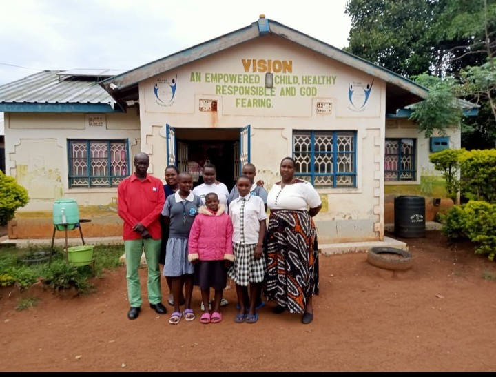

♧
Socio-Emotional Development
Encouraging self-worth, life skills, active community participation, and leadership.
Our social programs →
Budokomi Child and Youth Development Centre (CYDC), under ACK Budokomi Church and in partnership with Compassion Kenya, is committed to supporting children and youth to overcome poverty and reach their God-given potential. Through education, spiritual guidance, mentorship, and holistic care, the centre nurtures children to grow spiritually, physically, socially, and emotionally, building a foundation for a brighter future.
Our mission: Releasing Children from Poverty in Jesus’ Name.
Releasing children from poverty in Jesus name.

We focus on releasing children from poverty in Jesus’ name through spiritual growth, education, mentorship, health, and holistic child development.
Encouraging self-worth, life skills, active community participation, and leadership.
Our social programs →Promoting formal learning, vocational training, knowledge-sharing, and informed life choices.
Explore learning →Nurturing a personal relationship with Christ through scripture, prayer, and discipleship within ACK Budokomi Church.
Spiritual growth →Securing regular medical checkups, nutritional food security, healthy habits, and child safeguarding.
Physical care →
We believe lasting community progress happens when young people are included, equipped and supported to help shape their future.
Change a life of a child. Volunteer your time, support our development initiatives, or explore community partnership opportunities.